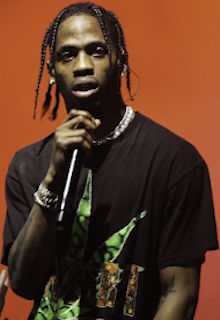

Meine-Lieblingsrapper
In den letzten 15 Jahren, in denen ich nun jetzt schon Rap-Musik höre, gab es einige Künstler,
die mich musikalisch aber auch durch ihre Geschichte begeistert haben. Oft kann ich mich mit diesen Künstler identifizieren, oder verstehe zumindest deren Intentionen. Meistens gefallen mir die Lieder, die einen schönen Refrain haben und dabei auch noch eine Message weitergeben, was ja
auch immer zum Teil der Sinn dieser Musikrichtung sein soll. Es folgt eine Auflistung einiger, weniger Rapper, die für mich alle einmalig und besonders in Ihrer Musik sind.
- Samra
- Samra (*1995, bürgerlich Hussein Akkouche) ist ein Berliner Rapper libanesischer Herkunft. Aufmerksam auf Samra wurde ich durch einen gemeinsamen Track mit Capital Bra (Wir Ticken). In seinen Liedern geht es wie bei vielen anderen Rappern nicht nur um Geld, Frauen und Drogen, sondern um wirklich wichtige Themen. In seinem Lied Cataleya zum Beispiel rappt er von der Liebe und wie diese unter der Armut leiden muss. Trotzdem macht Samra auch viel aggressive Musik. Doch auch hier vermittelt er stets Erfahrungen aus seinem Leben, meist verpackt mit einer Message. Dabei dient seine laute, raue Stimme oft zur Verdeutlichung seiner früheren bzw. auch noch heutigen Probleme.
Samras Musik ist ehrlich und eine herrliche Abwechslung zum öden Autotune-Rap von heute.
|
|
- Eminem
- Eminem (* 17. Oktober 1972 in St. Joseph, Missouri als Marshall Bruce Mathers III) ist einer der bekanntesten und erfolgreichsten Rapper jemals. Im Teil zu "Ami-Rap" habe ich schon einige Worter über ihn verloren. Vor allem in meinen früheren Jahren, nachdem ich den Film 8 Mile gesehen habe, war ich erstaunt über Eminems Werdegang.
Aufgewachsen ohne Vater im runtergekommenen Trailerpark war er ohne Perspektive. Seine einzige Chance war der Rap. Damals war es jedoch unvorstellbar, sich als Weißer einen Namen im Rap-Business zu machen. Und doch hat Eminem es geschafft und so eine neue Ära eingeläutet und anderen weißen Rappern gezeigt, dass es egal ist, welche Hautfarbe man hat. Nur Talent und Fleiß entscheiden über Erfolg oder Misserfolg.
Eminems Texte heben sich stark ab von der Rap-Masse. Statt über Drogen, Frauen oder Geld zu rappen, erzählt er seine eigene Geschichte, ähnlich zu Samra. Dabei verfügt er über einen enormen Wortwitz, was das Hören seiner Musik teilweise sehr amüsant macht.
Eminem ist ohne Frage eine Rap-Legende und wird durch seine Texte und seine Musik nei vergessen werden.
|
|
- Luke Christopher
- Luke Christopher (* 8. Mai 1993 in Los Angeles) ist ein US-amerikanischer Rapper und der unbekannteste Künstler in dieser Auflistung.
Chrstophers Musik ist sehr melodisch und meist eine Mischung aus Gesang und Rap. Das macht sie sehr vielseitig. Jedes Lied ist anders und einmalig. Mein absolutes Lieblingslied heißt Lot to learn. Es ist Christophers erfolgreichstes Lied und geht um eine Jugend-Liebe. Hier wird das Schema seiner Musik gut deutlich. Im Rap-Teil erfährt man die Geschichte an sich und im Refrain wird dann das Problem, der Kern davon, normal oder wie in Lot to learn durch eine Metapher wiedergegeben.
Christopher ist einer der wenigen Künstler, von dem es kaum ein Lied gibt, das mir nicht gefällt. Jedes Lied ist besonders und vermittelt
seine eigene Message.
|
|
- Travis Scott
- Travis Scott (* 30. April 1992 in Houston, Texas; richtiger Name: Jacques Webster II) ist momentan einer der erfolgreichsten und schillerndsten Personen im Rap-Business. Seine Musik ist wie oft heutzutage von Auto-Tune geprägt und lebt von einer ganz besonderen Atmosphäre, bestehend aus einer dunklen Soundästhetik gemischt mit eingängigen Melodien. Travis selbst sah sich nie als Rapper an und hatte somit auch nicht den Anspruch, großes Storytelling vorweisen zu können.
Travis Scott ist eine Ikone, was Live-Shows angeht. Dabei geht es darum, vollkommen abzuschalten und in einen realitätsfernen surrealen Film zu kommen. Seine Musik, seine verwirrend wirkende Bühnenpräsenz und seine abgefahrenen Visuals liefern das perfekte Ambiente dazu. Scott produziert Musik für Kanye West und diverse andere große Namen. Er ist prägend für die momentane Szene und entwickelt Hip-Hop weiter.
|

|
Quellen
Samra-Bild: https://www.facebook.com/SamraBerlin/photos/a.436054139927416/988255754707249/?type=3&theater
Emine-Bild: ©AllStar, https://www.shortlist.com/news/15-things-you-probably-didnt-know-about-8-mile
Luke Christopher-Bild: ©RCA Records, https://hamburg.mitvergnuegen.com/2016/2016dienstag-31-05-luke-christopher-kleiner-donner/
Travis Scott-Bild: ©Kevin Winter, Getty Images, https://www.xxlmag.com/news/2019/05/nike-app-travis-scott-shoe/